纱雾的小小画室 · 静静读一会儿
JavaScript
未启用。你仍然可以阅读角色介绍、衣橱说明、完整画廊、桌面秘密和晚安纸条；场景移动、换装、分支日常、共同创作与声音播放需要启用
JavaScript。这里不会自动播放声音，也不会代替你记录一次互动。
和泉纱雾：害羞不是冷淡
她不太擅长把心情说得很长，却会认真收好每一张草稿。靠近一点也可以——只是被她发现时，记得先假装没有一直盯着看。
她会先躲到门后确认你还在；拿起笔以后，又会认真得忘记继续躲。
“可以待在旁边……但是不许一直看我。”
衣橱里，她还在认真犹豫
不是只换一种颜色。每一套都对应她留在房间里的某个时刻，你可以替她做一次不太郑重的决定。下面保留衣橱原有的插画与说明，供安静阅读。
宽松运动家居服
袖子要够长，裤脚要够软。窝在房间里画画的时候，这样才最安心。
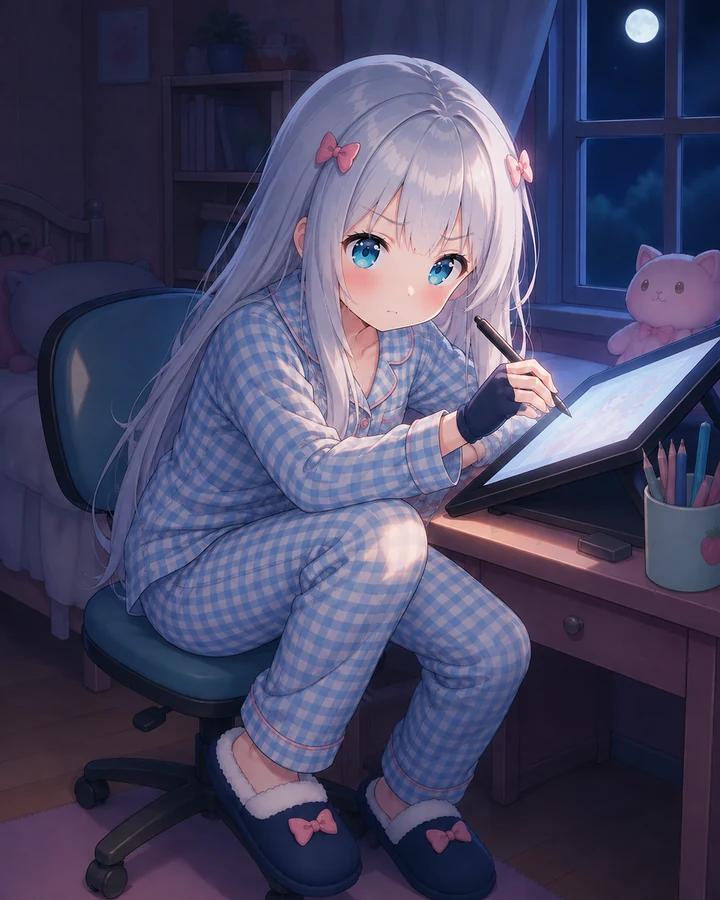
格纹画稿睡衣
蓝白格睡衣、绘图手套和不会掉下去的软拖鞋——熬夜画稿模式，准备完成。
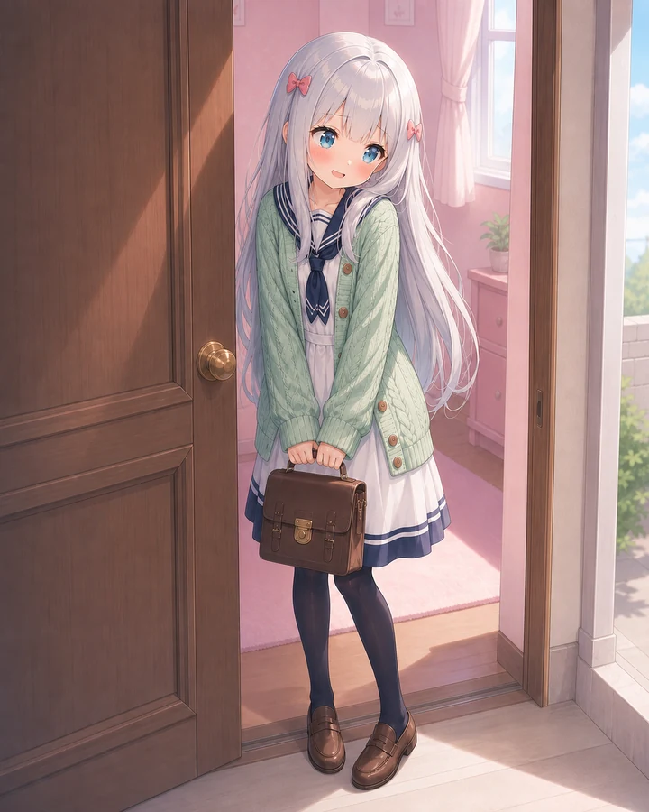
薄荷水手外套
水手领、厚厚的薄荷针织和能挡住紧张的书包。真的要出门时，会在门口多站一会儿。
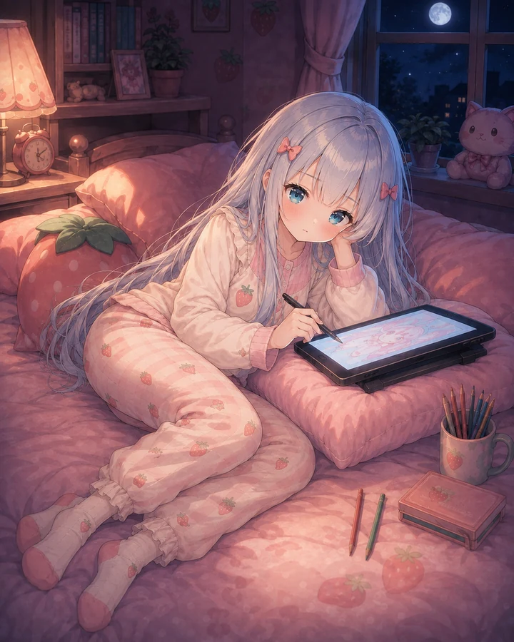
草莓睡前服
已经换好睡衣，却还舍不得放下最后一笔。数位板垫在枕头上，画到眼睛发困才肯保存。
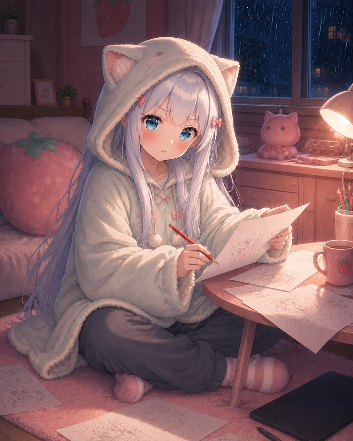
猫耳连帽毯
帽子拉低一点，袖子再长一点，就能把雨声和截稿压力都挡在外面；该改的线却一笔也不会漏。
她的画册，只肯一页一页给你看
从偷偷开始画，到终于把画推近一点，她越来越藏不住想听见认真感想的小心思。这十一页原有画稿与旁注，都留在这里。
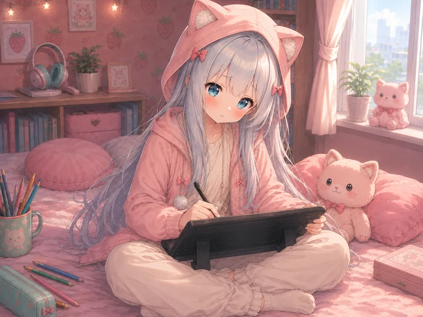
被抓到在床上画画
她原本把数位板藏在膝盖上。听见你靠近，只来得及红着脸抬头：“不许笑……这里比较舒服而已。”
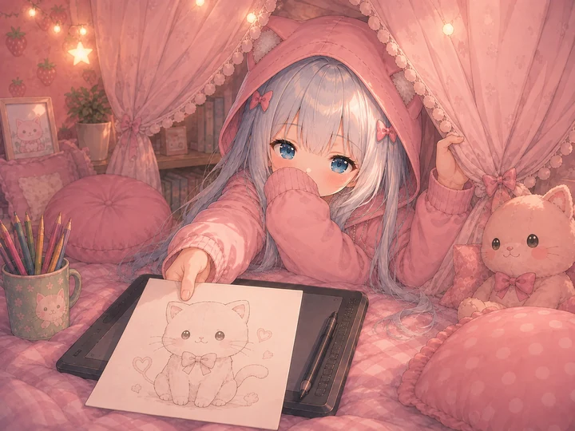
被窝画室只开一条缝
她用被子围出一间更小的画室，只把帘子拉开一点点。小猫速写先从缝里递出来，藏在袖口后的声音轻得几乎听不见：“画、画可以先看……”
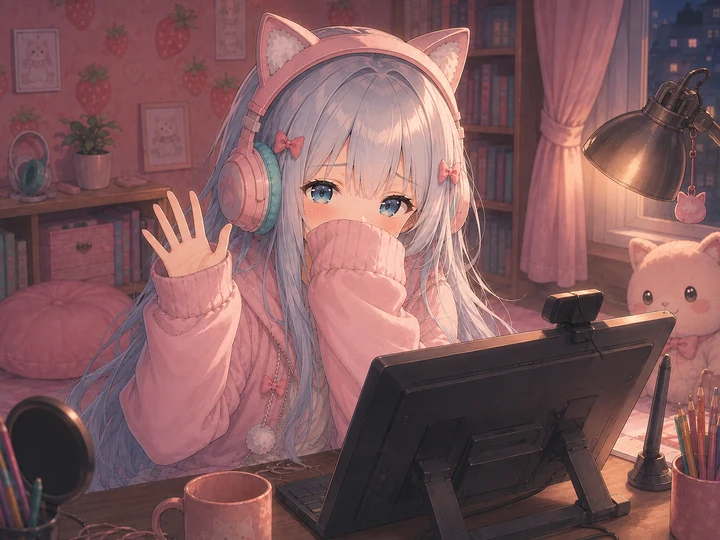
直播开始前的小小挥手
进入画师模式时，她盯着线稿比谁都认真。发现镜头还开着，才用袖口挡住脸，飞快挥了一下手：“只、只是在确认画面。”
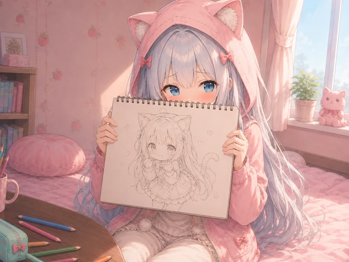
只给你看三秒
画纸举得很认真，视线却躲到了旁边。“看、看完就要说感想……不许只点头。”
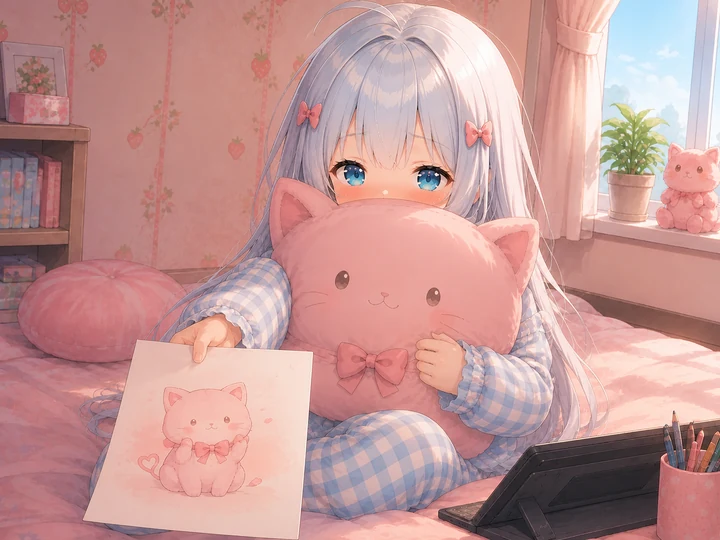
躲在靠枕后把画递给你
大半张脸都藏起来了，画却认真地伸到你面前。“只、只许看画……不许一直看我。”
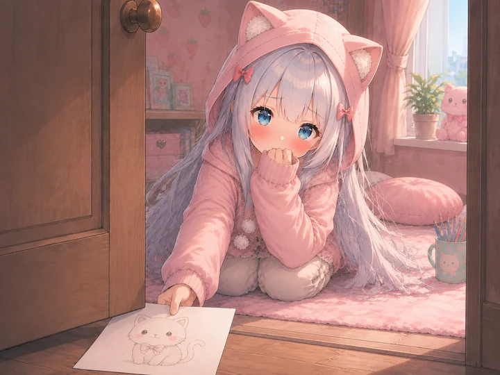
谢谢要从门缝里递出来
亲口说出口还是太难了，于是她把认真画好的小猫卡片从门缝推给你。等你接稳，门后才传来一句：“那、那只小猫不许笑。”
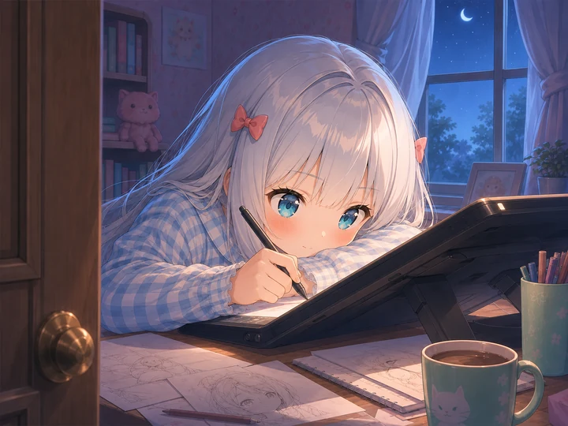
认真起来就忘了害羞
嘴上说着不许偷看，真正画起来以后，连门边的脚步声都听不见了。
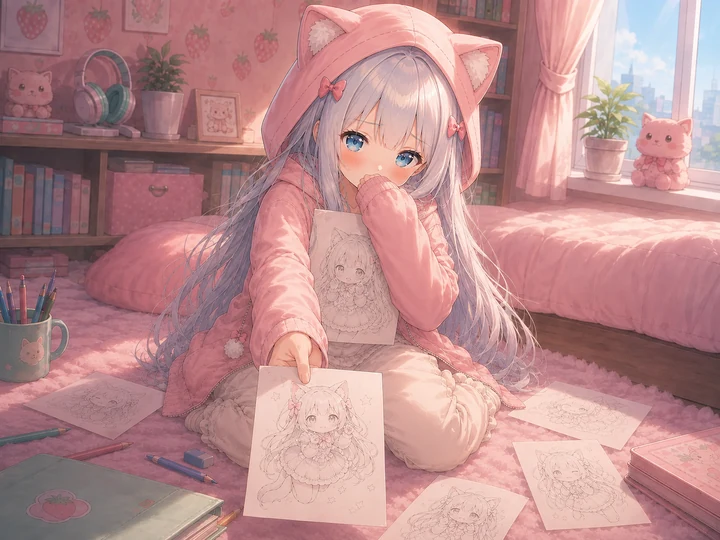
最喜欢的那张先藏住
散在地毯上的草稿被分成好多小堆。她把最喜欢的一张紧紧抱住，却又把另一张悄悄推向你：“这张……可以替我保管一下。”
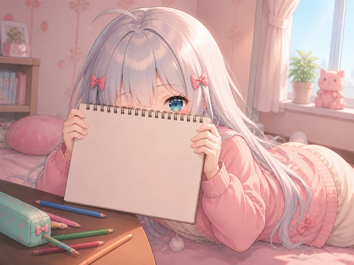
被看太久就藏起来
画册挡住了大半张脸，但那双眼睛已经把“我知道你还在看”全都说出来了。
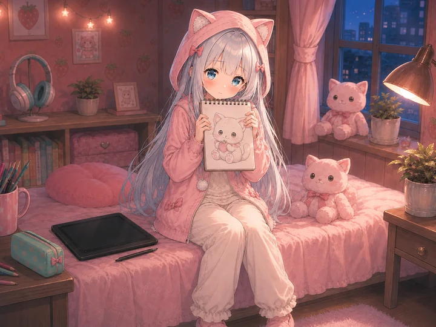
装作没有在等夸奖
她把画留在最显眼的位置，自己却缩进了宽大的袖口里。“我、我没有催你……慢慢看也行。”
今天的最后一页
稿子保存好，窗帘留一条缝，再抱住最软的玩偶。临睡前，她还是小声补了一句：“明天……也可以来。”
桌面上，不肯主动说的小习惯
数位板、耳机、稿件、玩偶和抽屉，各自收着她的一小段日常。
数位板
快捷键都设成单手能按到，因为另一只手常常要抱着靠枕。
耳机
画线稿时会循环同一张安静的歌单，音量永远只开到三格。
轻小说稿件
页边画满了表情草稿。比起剧情批注，她更先注意角色有没有好好笑出来。
猫咪玩偶
不顺利的时候会被抱得很紧。顺利的时候，也一样。
上锁抽屉
钥匙藏在薄荷色铅笔盒底下。她愿意一起打开时，留言就留在抽屉里。
抽屉里留过这样一句话：“谢谢你没有催我开门。下次……也可以来。”
看过那些画以后，今晚别走太早
她会发现你还在，也会在你偷看时慌张地把画盖住。可以帮忙选一件小事，也可以什么都不催，只安静陪她画一会儿。
共同创作从陪伴方式开始：安静坐在旁边（不催她，也不一直盯着屏幕）；问她哪里需要帮忙（等她自己把犹豫说出来）；把椅子挪远一点（给她留出不会被盯着看的距离）。停笔、偷看、遮住画面，然后终于把完成稿推到你面前；整段沉默也可以是一种陪伴。
可以一起选择画里的小猫和画面的配色。下面是原有的三个题材，它们并不表示你已经在这次拜访中完成了作品。

门缝看月亮的小猫
明明好奇，却只肯先探出半张脸。她先画了一条很窄的门缝，又在外面留了一轮月亮。
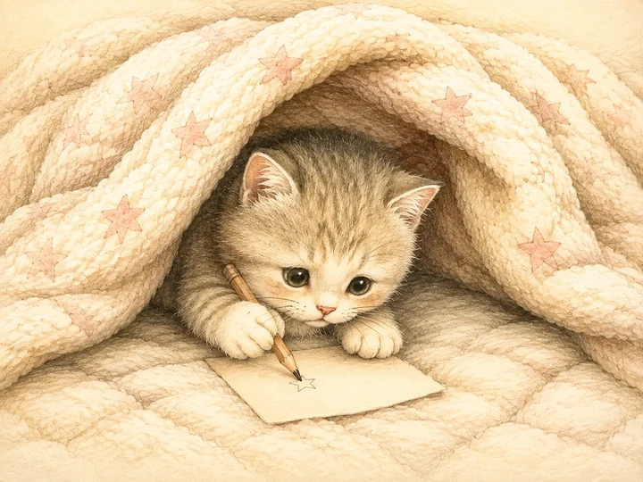
被窝里画星星的小猫
躲进最小的画室，还是很认真地下笔。她把被子画成一间很小的画室，只给笔尖留了出口。
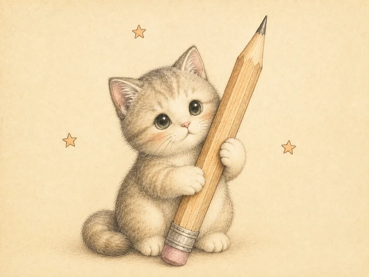
抱着大铅笔的小猫
看起来软绵绵，抱住画笔时却很认真。她把铅笔画得比小猫还大，爪子却抱得很稳。
配色选择：草莓黄昏：暖粉、纸灯和一点点晚霞；薄荷雨夜：安静的薄荷青压住窗外雨声；银蓝月光：银白、月蓝和很淡的夜色。
看完以后，可以认真说说“线条看起来很软”、“小猫的眼神很认真”、“配色像一盏小夜灯”。这些具体感想，比只点一下头更能让她安心。
启用互动后，可以暂停、离开，再继续真实保存的未完成稿；共同成稿与回访记忆只依据实际发生的选择，不凭空补出共同经历。安静陪伴可以随时结束，不需要等够一段时间才能继续。
门会关上，纸条可以带走
一起画过以后，今天的拜访才到这里。她把一张很小的纸条塞到门缝下面——字写得急了一点，但没有收回去。
台灯变暗，玩偶被抱紧，书页停在下次继续的地方。她困得睁不开眼，还是记得提醒你下次敲门。
“画不完也没关系，先把今天好好收起来。”
“今天已经很努力了，剩下的一小步留给明天。”
“如果有点害怕，就先从门缝里看一眼。”
“喜欢的事情不用解释很大声，认真做下去就好。”
“晚安。明天醒来，线条会比今晚更轻一点。”
“有人安静陪着的时候，房间就没有那么小了。”
这些是原有的晚安小纸条。静态阅读不会自动保存；启用互动后，可以收下或复制纸条文字。